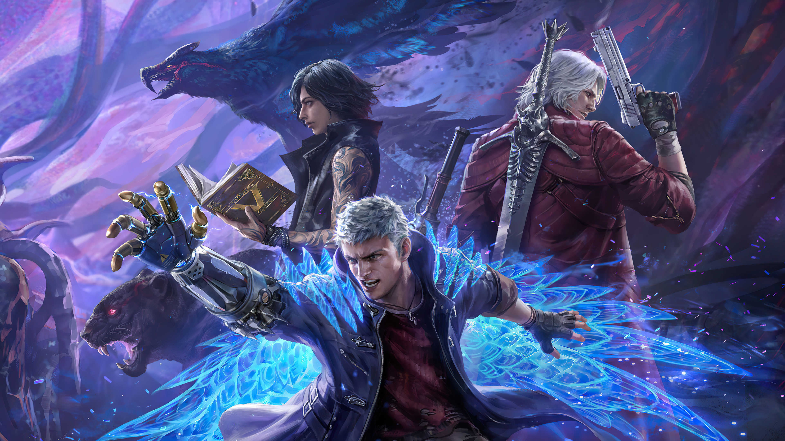

Devil May Cry is an urban fantasy action-adventure game franchise created by Hideki Kamiya. It is primarily developed and published by Capcom. The series centers on the demon hunter Dante and his efforts to thwart various demon invasions of Earth.
Its gameplay consists of combat scenarios in which the player must attempt to extend long chains of attacks, avoiding damage and exhibiting stylized combat by varying their attacks; this combat, along with time and the number of items collected and used, are considered in grading the player's performance.
The series alludes to Italian poet Dante's Divine Comedy. Hideki Kamiya created Devil May Cry after a failed attempt to develop a Resident Evil game with the first game originally being conceived as Resident Evil 4.

Kamiya wanted to create a game with more action features, which Capcom felt the series did not need. The games were directed by Hideaki Itsuno and writer Bingo Morihashi. Capcom announced a new game, DmC: Devil May Cry (developed by Ninja Theory and supervised by Capcom), during the 2010 Tokyo Game Show.
A high-definition remastering of the three PlayStation 2 titles was released for PlayStation 3 and Xbox 360 in 2012, and in 2018 for the PlayStation 4, Windows, and Xbox One. The latest game is Devil May Cry 5, released on March 8, 2019.
The series has been successful; the main entries has sold 32 million copies worldwide and received Capcom's Platinum Title award.
The success of the video-game series has led to comic books, novelizations, two animated series, guides, collectibles, publications, and a variety of action figures.
2025 Epic Realms. All rights reserved.